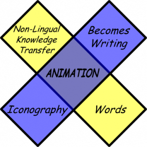

In the same way that I tried to relate a few details about changes in early Chinese society using animation, there’s now a much more competently produced abstract animated retelling of Little Red Riding Hood by Tomas Nilsson. This goes along with explaining how nuclear reactors work and how modern society grows ever more rote and dreary. I feel the need to repost the animation tetrad before trying to suss out where this is all going.

You’ll notice in Little Red Riding Hood that the iconography